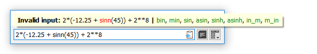

Functions are the most powerful elements for calculation in SUM. There are more than 120 function, both Python built-ins and custom functions. Large portion of custom functions are unit converters. They differ from the rest by "_" underscore separator, "in_mm" for example, which means "inch to millimeter" (see Functions list topic for all functions).
All functions consist of a name, delimiters (parentheses), and one or more arguments. The pattern is - name( argument[s] ). Any allowed1 element or expression, including functions, can be placed as an arguments.
Arguments can be also optional, so omitted. These arguments are italics in Quick help (see Quick help example below).

Quick help for a function (third argument of the function is optional).

Name error notification with suggestions.
There are two helpers available for functions:
Quick help: to see Quick help for the function, just write help inside parentheses, in place of arguments. If Quick help is called for more than one function, only first from the left will be shown.
Suggestions: if the name of a function is mistyped, SUM is trying to find and show the most close functions' names after | (pipe) separator.
1. For particular arguments of some functions there are specific limits. In case of argument error, as well as all calculation errors, user is always notified by notification balloon.